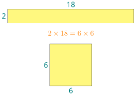
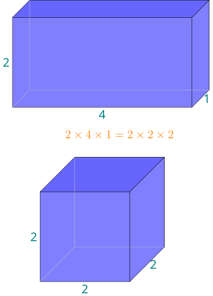

几何平均数
几何平均数是一种特殊的平均方式。它的做法是：先把所有数字相乘，然后开平方（两个数）、开立方根（三个数），以此类推。
例：$2$ 和 $18$ 的几何平均数是多少？
- 先把它们相乘：\(2 \times 18 = 36\)
- 然后开平方（因为有两个数）：\(\sqrt{36} = 6\)
一句话写出来就是：
\begin{align*}
\text{2 和 18 的几何平均数} &= \sqrt{2 \times 18} \\
&= 6
\end{align*}
就像下图一样，面积没变，但是宽高相等了。

例：$4$、$2$ 和 $1$ 的几何平均数是多少？
- 先相乘：\(4 \times 2 \times 1 = 8\)
- 然后开立方根（因为有三个数）：\(\sqrt[3]{8} \approx 2.83\)
一句话写出来就是：
\begin{align*}
\text{几何平均数} &= \sqrt[3]{4 \times 2 \times 1} \\
&\approx 2.83
\end{align*}
就像下图一样，体积没变，但是边长相等了。

例：1、3、9、27 和 81 的几何平均数是多少？
- 先相乘：\(1 \times 3 \times 9 \times 27 \times 81 = 59049\)
- 然后开五次方根（因为有五个数）：\(\sqrt[5]{59049} = 9\)
一句话写出来就是：
\begin{align*}
\text{几何平均数} &= \sqrt[5]{1 \times 3 \times 9 \times 27 \times 81} \\
&= 9
\end{align*}
对于5个数就没法画出来漂亮的图形了，不过依然可以用下面这个等式表示：
\begin{align*}
&1 × 3 × 9 × 27 × 81 \\
&= 9 × 9 × 9 × 9 × 9
\end{align*}
例：一个分子和一座山的几何平均数是多少？
用科学记数法表示：
- 一个水分子大约是 \(0.275 \times 10^{-9}\) 米
- 珠穆朗玛峰大约是 \(8.8 \times 10^3\) 米
二者的几何平均数就是：
\begin{align*}
&\sqrt{0.275 \times 10^{-9} \times 8.8 \times 10^3} \\
= &\sqrt{2.42 \times 10^{-6}} \\
\approx &0.0016 \text{米}
\end{align*}
也就是 1.6 毫米，差不多是一枚硬币的厚度。
我们可以说：
“一毫米，差不多在分子和高山之间一半的位置。”
再来看一个有意思的：
例：一个细胞和地球的几何平均数是多少？
- 一个皮肤细胞直径大约是 \(3 \times 10^{-8}\) 米
- 地球直径大约是 \(1.3 \times 10^7\) 米
它们的几何平均数等于：
\begin{align*}
&\sqrt{3 \times 10^{-8} \times 1.3 \times 10^7} \\
= &\sqrt{3.9 \times 10^{-1}} \\
= &\sqrt{0.39} \\
\approx &0.6 \text{米}
\end{align*}
一个小孩子大概就有 0.6 米高。可以说：
“一个孩子，差不多在细胞和地球之间一半的位置。”
所以，几何平均数能帮我们在差别很大的数值之间找到一个中间值。
定义
对于 \(n\) 个数字，先全部相乘，然后开 \(n\) 次方根（写作 \(\sqrt[n]{}\)）。
更正式地说，n 个数 \(a_1\) 到 \(a_n\) 的几何平均数是：
\[
\sqrt[n]{a_1 \times a_2 \times \cdots \times a_n}
\]
应用
想比较一些性质差异很大的事物时，几何平均数特别有用。
例：你想买一台新相机
- 一台相机变焦是 200，评分是 8
- 另一台变焦是 250，评分是 6
如果用普通的算术平均数来比：
- \((200 + 8) \div 2 = 104\)
- \((250 + 6) \div 2 = 128\)
你会发现，由于变焦数值太大，评分对结果几乎没影响。
但如果用几何平均数：
- \(\sqrt{200 \times 8} = 40\)
- \(\sqrt{250 \times 6} \approx 38.7\)
即使第二台变焦更大，但评分低了，整体得分反而更低。
这说明：几何平均数能让不同量级的数值“公平”地参与比较。